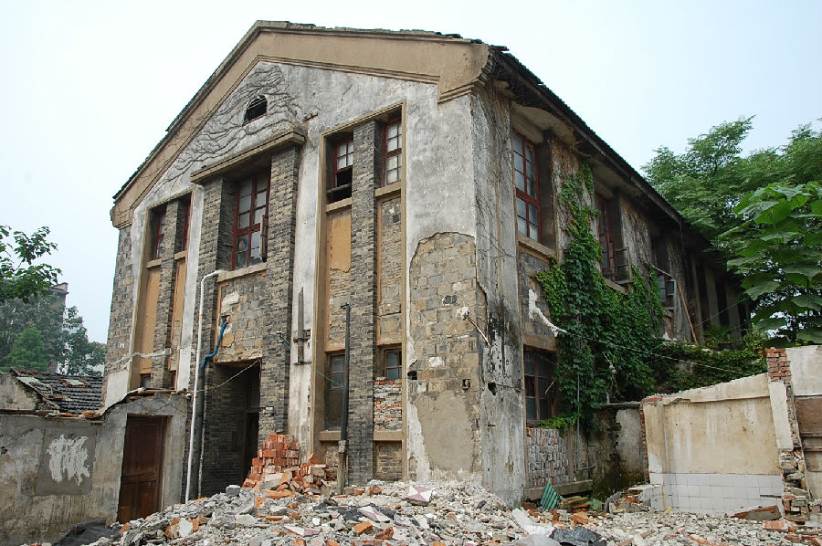
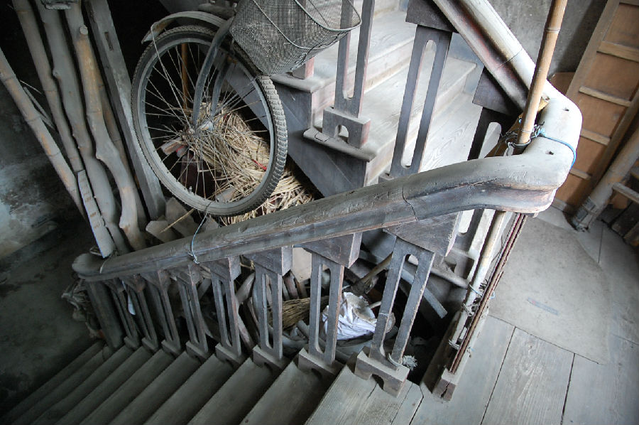

嘉兴市文物保护网 · 市级文物保护点 · 2020-11-09 · 原文


老财政局办公室位于嘉兴市南湖区建设街道瓶山社区环平里52号，建于20世纪50年代，曾作为财政局办公室。建筑占地面积180.5平方米,砖混结构，平面呈矩形，整体自东向西伸展，南北中轴对称，中间高南北低。立面由檐部、墙身、勒脚三段组成，东西两头开门，中间为过道，楼梯设在房屋中部，为木质呈“之”字形。屋顶为硬山顶，铺设青黛瓦，墙体用青砖砌筑，外立面未粉刷，是典型的苏联风格式建筑。该建筑是目前嘉兴所存为数不多且保存较好的苏式建筑，同时也是建国初期重要的政府机构旧址，具有较高的科学和历史价值。2009年公布为嘉兴市文物保护点。